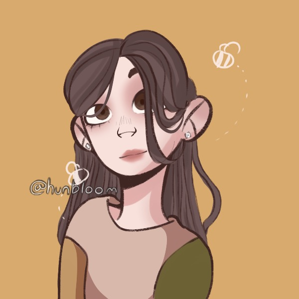

these are our COG's! These show that our products and small, inexpensive, and adorable!
This idea to make these cute earrings was created by three girls Olivia, Lee, and Addie. They are three 7th graders at GMS. The three of them worked together to pick these charms, and metals, they hope you enjoy them!
|  | ||
| Olivia lives in California with her mom, dad, sister, and dog lily. She enjoys reading Keepers if the Lost Cities (KOTLC) by Shannon Messenger, (Team Foster-Keefe!). In her free time she likes hanging out with friends, practicing gymnastics, watching BTS videos and Marvel movies. (left) |
Lee is 12 years old and likes doing gymnastics & reading Keeper of the Lost Cities. (sOkEeFe 4 LiFe!) She has a Dog and a Cat, they are both super cute. She hopes you buy something from Alika Earrings!! (center) |
Addie has two guinea pigs and red is her favorite color. Addie’s favorite food is pasta and she lives in California. Addie loves to run in cross country, play basketball, surf, jump on trampolines, and climb trees. Addie is a proud Gemini ♊ (right) |